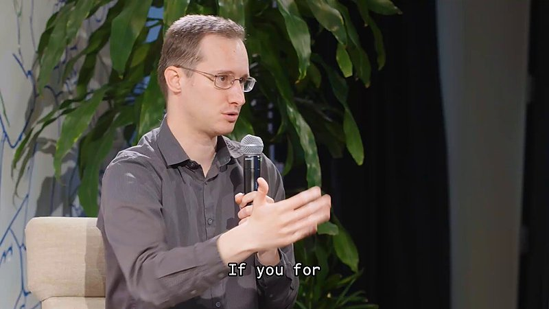

AI 日报 · 10月24日
Agent 技能走向开放标准，安全与运行环境跟上了吗
Anthropic 将 Agent Skills 标准捐赠给中立基金会，并把完整 Claude Platform 带到 Google Cloud；Replit 说明近期漏洞的补丁与重发责任。Builder 同时讨论短期凭据、机器人语言指导与开放权重模型。
Agent 技能
开放标准
应用安全
模型部署
5
Builder 动态
3
今日上榜项目
3
官方原文
1
公开视频
今日要点
技能格式交给跨厂商社区维护
Anthropic 10 月 22 日宣布把 Agent Skills 的名称、标识、GitHub 组织和域名捐赠给 Linux Foundation 旗下 Agentic AI Foundation。官方提出版本发布、正式提案流程与安全指南作为后续路线图；这些是提案，并非已落地规则。
平台拦截与用户更新是两道不同工序
Replit 10 月 22 日说明其已对近期第三方漏洞部署防护、更新工具链并通知受影响客户；部分 Python、Node.js、PHP 应用仍需用户更新或重新发布。具体操作以其安全中心和原文为准。
深度对话
Mistral 研究负责人谈开放权重模型的训练取舍
MAD Podcast 主持人 Matt Turck 与 Mistral 研究负责人 Pierre Stock 的公开视频，围绕 Mistral Large 4 的训练、混合专家、强化学习及开放权重展开。以下议题依据主持人发布的章节目录整理，具体观点请以原视频为准。
从训练基础设施谈模型规模
节目目录把自建数据中心训练、万亿参数和混合专家列为前半段议题。Mistral 官方说明 Large 4 是公开预览，权重计划于当月末发布。
效率与能力之间如何选择
主持人的时间轴继续讨论推理模式、多模态、合成数据及强化学习。把这些作为模型设计问题来听，比仅看单项榜单更有帮助。
开放权重也要考虑安全边界
访谈后段列出网络安全拒绝行为、时间序列模型和 AI 辅助研究等议题；关于产品能力的表述仍需回到官方文档核验。
资讯精选
官方发布与延伸阅读
Anthropic｜Agent Skills 标准捐赠
Anthropic 表示 Agent Skills 将由 Agentic AI Foundation 提供中立治理场所，并提出版本与安全指导的后续工作。
Claude｜完整平台能力进入 Google Cloud
Anthropic 管理的 Claude Models on Google Cloud 已正式可用，支持沿用 Google Cloud IAM、账单和云承诺额度；该方案与 Google 管理的 Claude 服务并存。
Builder 动态
标准、安全与模型实践的现场声音
Boris Cherny｜技能格式交给社区
Claude Code 的 Boris Cherny 回顾 Agent Skills 从内部实验起步，认为已有多种工具采用，把规范移交 Agentic AI Foundation 更合适；具体治理安排以 Anthropic 公告为准。
Amjad Masad｜应用发布后仍须防护
Replit 的 Amjad Masad 指向公司对近期漏洞的处理说明。原文将平台侧拦截、工具更新和用户重新发布分开列出，不能把平台防护当成所有应用已完成更新。
Guillermo Rauch｜减少长期静态凭据
Vercel 的 Guillermo Rauch 主张用会到期的凭据降低密钥泄露后的影响，并呼吁行业推广 OIDC。这是他的安全倡议，实际迁移仍要按系统验证权限与续期。
Aditya Agarwal｜用自然语言教机器人新技能
Aditya Agarwal 转述 Physical Intelligence 联合创始人 Sergey Levine 的谈话：机器人训练正在从针对任务微调，转向更直接的语言指导；所举 π0.7 是访谈案例，不等于所有机器人都已具备该能力。

Matt Turck｜追问开放权重模型的训练
Matt Turck 公布与 Pierre Stock 的访谈章节，覆盖 Mistral Large 4、混合专家、数据和强化学习；节目时间轴提供了直接跳看具体议题的线索。
GitHub Trending
今日榜单的三个项目


按 10 月 24 日 GitHub Trending 实时榜单筛选，避开昨日重点；星标、分叉和语言是本次 GitHub API 快照，随后会变化。用途按仓库自述整理。
今日思考
技能规范让工作流更容易跨工具复用，云平台降低接入摩擦；但运行安全并不会因此自动完成。Replit 的说明把平台补丁和用户重发列为不同动作，Builder 又提醒凭据寿命和真实场景验证。今日一问：你的 Agent 使用了哪些可复用技能？它们的权限、运行边界和更新责任分别由谁维护？
参考来源
Anthropic｜Agent Skills 捐赠公告
Claude｜Google Cloud 上的完整平台说明
Replit｜漏洞处置说明
Mistral｜Large 4 官方说明
MAD Podcast｜原频道访谈视频
Boris Cherny｜Agent Skills 原帖
Amjad Masad｜Replit 安全原帖
Guillermo Rauch｜凭据原帖
Aditya Agarwal｜机器人原帖
Matt Turck｜访谈章节原帖
GitHub｜10 月 24 日 Trending
NVIDIA/OpenShell
SnailSploit/Claude-Red
OpenBMB/VoxCPM